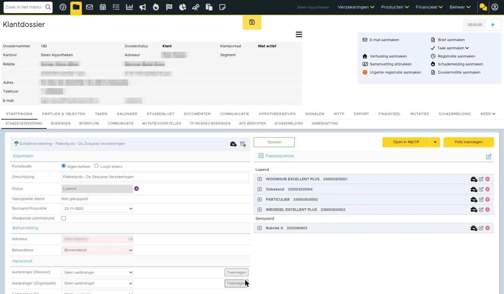

Schade- en levensverzekeringen omnummeren
Het kan voorkomen dat een maatschappij de portefeuille van een andere maatschappij overneemt. In eBlinqx wil je jouw dossier actueel houden dus ook hier de wijzigingen in doorvoeren. De overname van een portefeuille kan je in eBlinqx gemakkelijk verwerken door middel van de module Omnummering Hieronder lees je hoe je dit doet.
Module omnummering
Let op: ADN-batches met de POR-code van de oude en nieuwe maatschappij mogen niet openstaan wanneer je polissen wilt omnummeren. Deze moeten eerst afgerond zijn.
De module is te bereiken via Producten – Omnummering indien je de juiste rechten hiervoor hebt. Ook moet je werken met mutatievoorstellen en er moeten processen aanstaan om de omnummering te verwerken. Wil je gebruik maken van de module? Stuur dan een e-mail naar support-eblinqx@blinqx.tech.
Vanuit de module doorloop je verschillende stappen die hieronder worden toegelicht.
Overzicht
Als je de module opent, kom je uit in het overzicht. Via het overzicht kan je zien welk omnummeringen er in het verleden zijn gedaan en welke nog worden verwerkt. Ook kan je hier een uitvallijst downloaden, zodat je een overzicht hebt van de polissen die niet automatisch zijn omgezet. Ten slotte kan je hier een nieuwe omnummering starten via het plusicoon.

Selectie bepalen
Je bepaalt eerst welke bestaande polissen je wilt omnummeren. Je maakt een selectie van de bestaande polissen door een keuze te maken in:
- Kantoor: je kunt hier kiezen voor alle kantoren of een specifiek kantoor
- Maatschappij: dit zijn alle organisaties van type verzekeraar (aangevinkt in Beheer – Organisaties & Personen – betreffende maatschappij – tabblad Detail) met minimaal 1 opgevoerd product
- Type product en/of branche

Import
Vervolgens voeg je onder ‘Import’ het CSV bestand met daarin de nieuwe maatschappij en eventueel pakket- en polisnummers toe. Ga je met de knop ‘Vorige’ naar de stap ‘Selectie’ dan wordt het toegevoegde CSV bestand onthouden.

Type bestand
Het bestand wat je moet uploaden kan alleen het type CSV zijn. Excel en PDF bestanden worden niet ondersteund.
Meerdere bestanden en/of nieuw bestand toevoegen
De omzetting vindt plaats aan de hand van één bestand. Het is mogelijk om een nieuw bestand te uploaden als er al een bestand eerder is toegevoegd, maar dan worden de gegevens uit het eerdere bestand overschreven. Voeg je een nieuw bestand toe dan worden de latere stappen gereset. Het is niet mogelijk een nieuw bestand te uploaden als er al begonnen is met matchen of verwerken.
Bestand verwijderen
Het is mogelijk om het geüploade bestand te verwijderen door middel van het rode kruisje.

Kolomnamen in eerste regel
Voor het mappen van de producten is het belangrijk om te weten of de eerste regel in het CSV bestand kolomnamen bevat. Daarom moet je bij deze stap aangeven of de eerste regel kolomnamen bevat. Is dit het geval dan vink je de checkbox voor ‘De eerste regel bevat kolomnamen’ aan.

Mapping
De gegevens uit het CSV bestand moeten goed geïnterpreteerd en verwerkt worden. Bij de stap ‘Mapping’ geef je aan waar bepaalde waarden in het bestand staan. De werkwijze is afhankelijk van de aanwezigheid van kolomnamen in het bestand. Daarom moet je eerst (bij de stap Import) aangeven of de eerste rij in het CSV bestand kolomnamen bevat.
CSV bestand met kolomnamen
Wanneer je een CSV bestand met kolomnamen in de eerst rij hebt dan vink je dit aan. Onder de verschillende waarden (bijvoorbeeld oude maatschappij, nieuwe maatschappij) wordt automatisch de juiste kolom gezet. Ook wordt de eerste waarde die in deze kolom staat, mits deze niet leeg is, tussen haakjes getoond. Zo kan je zien wat er precies in die kolom staat.

Bij het omnummeren van een levensverzekering is het verplicht om de waarden ‘Nieuw polisnummer’ en ‘Nieuw product’ te vullen met een kolom. Bij een schadeverzekering zijn deze waarden optioneel.
CSV bestand zonder kolomnamen
Wanneer het een CSV bestand zonder kolomnamen betreft dan vul je zelf het resultaat in onder de waarden op basis van de eerste rij in de CSV bestand. In het dropdownmenu worden dan geen kolommen getoond, maar de resultaten uit de eerste rij van het CSV bestand. Je dient dan naast eBlinqx ook het CSV bestand te openen, zodat je deze erbij kunt houden om het goed in te vullen.

Heb je alles correct ingevuld dan klik je op ‘Volgende’.
Mapping levensverzekeringsproducten
Voor levensverzekeringen maak je in eBlinqx in Productbeheer per maatschappij producten aan. Via het omnummeren zet je de producten in het dossier over naar de andere maatschappij. Je dient dan ook een product te kiezen die onder deze maatschappij in Productbeheer is aangemaakt. Dit doe je via de stap ‘Mapping levensverzekeringsproducten’. Alleen de producten die op actief staan in Productbeheer (aan/uit symbool is oranje) worden hier getoond.

Matching
Je hebt de bestaande producten opgezocht (Selectie) en vervolgens de nieuwe producten toegevoegd en gemapt (Mapping). Bij de stap ‘Matching’ wordt er getoond in hoeverre er een match gemaakt kan worden tussen de bestaande producten in eBlinqx en de ‘nieuwe’ producten uit het CSV bestand. Hierin kunnen verschillende scenario’s ontstaan, namelijk
- Volledige matching
- Gedeeltelijke matching
- Geen matching
Bij de stap ‘Matching’ kan je per polis zien wat het uitgekomen scenario is.
Let op: geroyeerde en gearchiveerde pakketten en polissen worden uitgesloten bij het matchen.
Volledige matching
Er is een volledige match tussen eBlinqx en het CSV bestand. Zowel een match op het pakketnummer als polisnummer is gemaakt. Zowel het pakketnummer als polisnummer worden aangepast naar het nieuwe nummer wat staat in het CSV bestand. Onder de kolom ‘Gematched’ staat een ‘Ja’.

Gedeeltelijke matching
Er kan alleen een match gevonden worden op het pakketnummer of op het polisnummer. Dit kan verschillende scenario’s geven, namelijk:
- Alleen het pakketnummer is gevonden: dan wordt het pakketnummer aangepast naar het nieuwe nummer (het kan betekenen dat we dat 3x proberen, indien 3 polissen in 1 pakket staan)
- Alleen het polisnummer gevonden: dan wordt het polisnummer aangepast naar het nieuwe nummer
- Onder een pakket staan meerdere polissen en met maar één polis kan een match gemaakt worden: dan wordt alleen deze polis aangepast
Onder de kolom ‘Gematched’ staan dan ‘Pakket’ of ‘Polis’ om aan te geven wat er precies is gevonden.

Geen match gevonden
Zowel op het pakketnummer als polisnummer kon geen match worden gevonden. Dit is niet blokkerend. Onder de kolom ‘Gematched’ staat dan een ‘Nee’.

Andere scenario’s
Er kunnen ook andere situaties ontstaan wat belangrijk is om te weten, namelijk
- Het polisnummer is in eBlinqx aanwezig maar onder een andere maatschappij die is opgegeven. Deze wordt dan niet aangepast, de maatschappij is leidend.
- Het polisnummer komt meerdere keren voor in eBlinqx (en onder de juiste maatschappij). Al deze polissen worden aangepast
- Pakketnummer 1 en pakketnummer 2 worden beiden pakketnummer 3. Beide pakketten krijgen het nieuwe nummer van pakket 3, maar we gaan niet de pakketten samenvoegen.
- Polis 1 en 2 onder pakket 10, worden pakket 12 en 13 met losse polissen. Dit is niet blokkerend, maar we gaan het bestaande pakket niet opdelen. Dat betekent dat slechts 1 van de 2 pakketnummers wordt overgenomen en dat is in de regel de laatste in de CSV. In dit voorbeeld: 13
Opnieuw matchen
Het kan zijn dat je opnieuw wilt laten matchen. Dit kan je doen door te klikken op ‘Ververs’. Alleen bij de niet gematchte regels wordt geprobeerd om opnieuw een match te maken.

Controle en bevestiging
In dit scherm krijg je een overzicht te zien van wat je in de vorige stappen hebt aangegeven. Zo krijg je een samenvatting van onder andere de maatschappijen, producttype en het aantal wel of niet gematchte items.

Ook krijg je te zien wat er gaat gebeuren als je de omnummering gaat doorvoeren.

Wil je de portefeuille daadwerkelijk overzetten dan klik je op de knop ‘Portefeuille overzetten’. Je krijgt dan nog een extra bevestigingsvraag of je de omzetting wilt uitvoeren.

Verwerking
Na de bevestiging wordt de omnummering verwerkt. Onder de producten die zijn omgenummerd komt een registratie te staan waarin wordt weergegeven wie de wijziging heeft doorgevoerd, wanneer, de maatschappijen en de pakket- polisnummers zowel oud als nieuw. Daarnaast wordt er bij de schadeverzekeringen een mutatievoorstel aangemaakt.
De documenten en communicatie die aan het product zijn gekoppeld, blijven hieraan gekoppeld. Dit geldt ook voor de schademeldingen en boekingen. Het polisnummer wordt hierin wel gewijzigd naar het nieuwe nummer.
Het is niet mogelijk om een uitgevoerde omnummering terug te draaien. Dan zal je zelf de omnummering opnieuw moeten uitvoeren, maar dan net andersom.
Zo ziet het er nu uit in eBlinqx Connect
